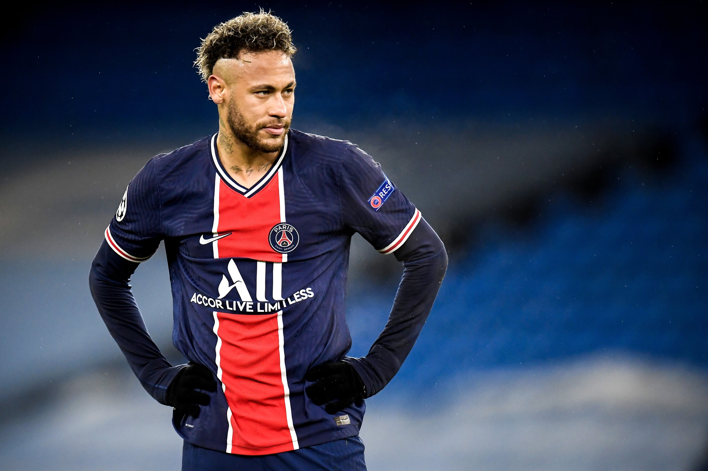

Neymar's tribute

Great football player
Neymar da Silva Santos Júnior (born 5 February 1992), known as Neymar, is a Brazilian professional footballer who plays as a forward for Ligue 1 club Paris Saint-Germain and the Brazil national team. He is widely regarded as one of the best players in the world.
- He is one of the best players
- Has 2ND most goals for brazil
- He is the caption of brazil national team
- He is the main player for his club psg
- He took his team to champions league final
- Played important role in world cup 2014
- Played important role in world cup 2018
- NO 3 In balon dor 2 times
- Four times samba dor winner
- Best Player of brazil